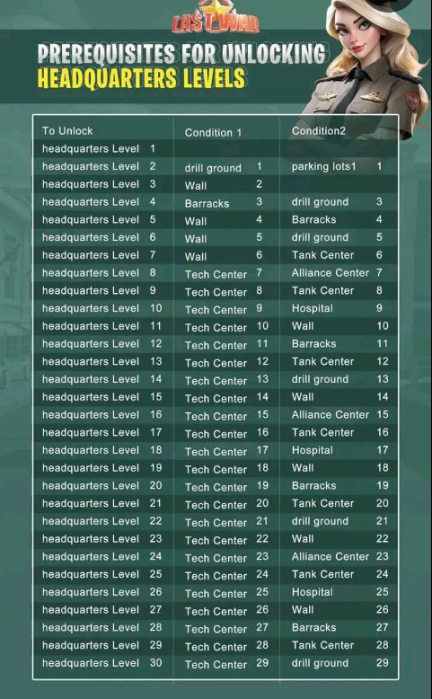

Vetra Alliance Guide
Upgrading the HQ means increasing the level of your base Headquarters. Each new level unlocks new buildings, improvements, research options, and stronger troops.
The HQ works as the center of your base. The higher its level, the more advanced your progress in the game becomes.
Improving the HQ brings several advantages:
Many game systems only unlock when the HQ reaches certain levels, so players who do not upgrade their HQ can get stuck in progression.
To upgrade the HQ efficiently, the ideal strategy is to follow the minimum requirement path.
You usually need to upgrade:
You should prioritize upgrading the HQ whenever possible, especially when:
During VS events, upgrading the HQ can generate a lot of points, so many players save resources to upgrade the HQ during those days.
Experienced players usually:
This way they upgrade their base and also earn many points for the alliance. 🏆

⬅ Back